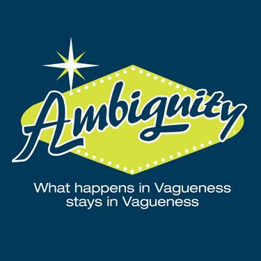
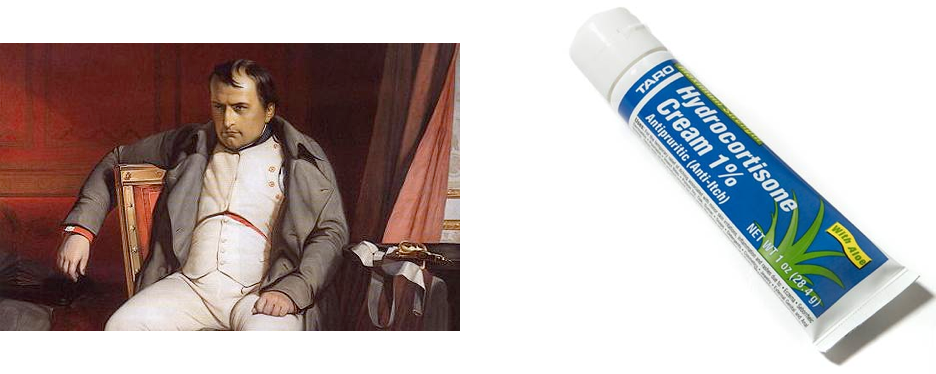
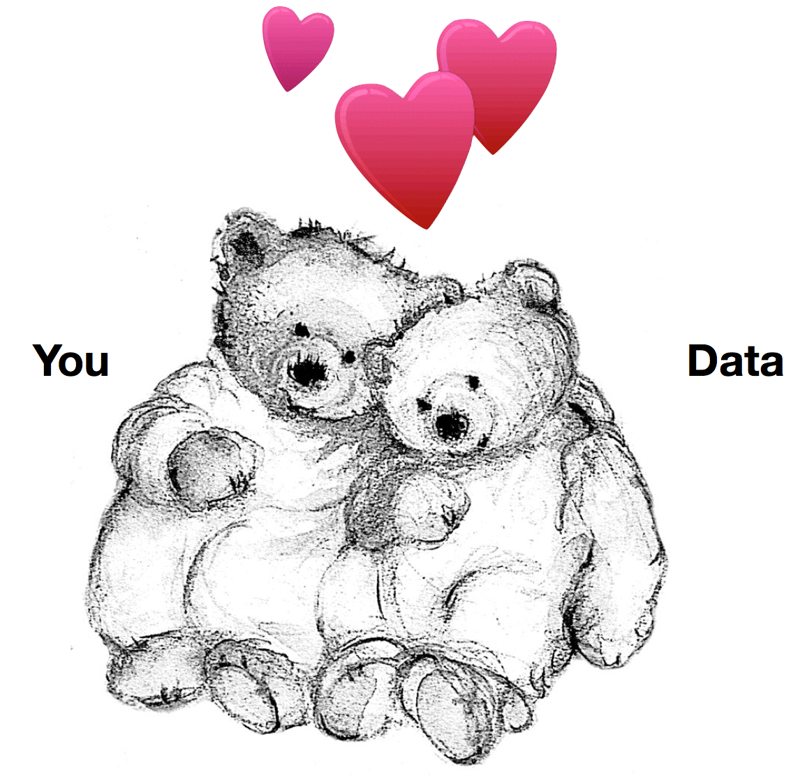

http://savethevowels.org/talks
644 million active websites (Source)
Mayo Clinic enters 298 million patient records per year (Source)
58 million Tweets per day (Source)
294 billion emails sent daily (Source)
Recorded phone calls, blog posts, Facebook updates…
… and that’s just the digital stuff
Humans are inefficient and expensive.

You have a computer which understands human language as well as it does computer language
“Ask people why they’re calling, and connect them to the right department based on their answer.”
“Flag all tech support conversations where the customer mentions a competitor”
“Be Siri, but good.”
“Redirect all angry-sounding customers to higher-tier support workers” (Speech emotion detection)
“Are the two people in this skype call flirting, arguing, expressing love, or sadness? Target post-session ads accordingly.”
“I want to talk to… billing?” (Uncertainty analysis)
“Yeah, I really like going to Applebees.” (Spot-the-sarcasm)
“Watch Twitter and give me the locations of wildfires, floods, etc, and provide information about damage, shelters and resources in an easy-to-read format” (EPIC)
“Read every news article about the Ukrainian Revolution and present the information on a cohesive timeline, with sources labeled.” (RED)
“Collect all case-law involving reverse mortgages in the state of Florida in which the plaintiff’s children filed suit against the mortgage company”
“Examine these two written passages/books and tell me whether they were both written by the same person” (Authorship Attribution Analysis)
“Examine these negative reviews and tell me what demographic the authors likely represent based on the language used.”
“Are these critical forum posts written by the same person?”
“Look for any information in the newswire which will predict a change in this company’s stock price, then buy or sell stock automatically.”
“Based on this person’s Facebook post history, how likely is she to click an ad for weight-loss pills?”
“Based on all the political posts and tweets in Westminster compared to those in Pueblo, how likely is this senator to lose in a recall election?”
| ### A Case Study |
| Advertisers want their ads to be relevant |
| They want to show ads related to topics and products people enjoy. |
| Using these principles, Facebook is trolling Will. |
Keywords == Mentions, Mentions == Interest
“Scan each Facebook post for certain keywords. If they appear, show ads for related products and topics.”
“blah blah blah blah blah marijuana, blah blah blahbity blah blah blah”
“blahbity blahblah, pot, blah blah blah blah blah Amendment 64 blahbity blah blah blah”
One tiny problem…
“Ugh, my neighbor is smoking marijuana on his deck again, time to bust out the gas mask.”
“I’m really tired of pot in public. Even after Amendment 64, I still can’t go to a concert without risking death.”
Presenting topical ads to people who hate those topics is a waste of money
This is easily preventable.
“How often, in this corpus of blogs, do people say nice or awful things about product X?”
“We’ve just leaked a picture of our next supercar. How do people on twitter like the design?”
“What are people saying about our leaked $199.99 pricepoint?”
“How do people on these forums feel about 9/11?”
Many hospitals around the country are switching to Electronic Medical Records (EMRs).
These records are easily available within the institution, and contain lots of valuable data.
Creating timelines is incredibly time-consuming for humans, as is comparison.
What if machines could do this for us?
Sequence of events:
“I have 30 seconds to learn this patient’s history. Go.”
“How often do patients have heart attacks within 2 years of starting Vioxx?”
“How many people who have a facelift develop persistent facial numbness?”
“How long do patients usually live following diagnosis of Glioblastoma?”
“Is there a correlation between the administration of vaccines and the development of autism?”
Humans interpret time naturally, and make reference to it often.
Temporality interacts with causality in interesting ways.
Event detection and reasoning is useful in a variety of domains.
“What happened” is a very fundamental question that everybody wants answered.
“Given this large sample of a child’s speech, is the child likely to be autistic?” (Current research at the LENA foundation in Boulder)
“Scan online white-supremacist forums for anything which looks like a threat against the President” (The US Secret Service)
“Watch these websites being used by islamist groups and look for specific language usage patterns that predict violent and radical behavior.” (All sorts of defense department grants)

Teaching computers to “understand” human language
Ghazaleh talked about the process already.
We’re going to look at a different question
Speech is a convenient cover for widespread telepathy.
([CITATION NEEDED])
“Bring me the bat, man”
“Bring me the Batman”
Did something happen? Is it real?
“The compound might be bombed”
“If they attack, we’ll bomb the compound.”
“The general stated that bombing the compound overnight “was still an option””
“We may conduct a bombing at 0300”
“We will conduct a bombing at 0300”
“We conducted a bombing at 0300”
Linking subsequent mentions of items and concepts to one another.
“The Bay Harbor Butcher is off the streets, as Dexter Morgan, the alleged killer, was arrested by police over the weekend”
““Bill Clinton was the President of the United States in 1999. Now Barack Obama is POTUS.”
Using a word to refer to a practically or metaphorically related concept
“The terrorist built a pipe bomb”
“The pipe bomb interrupted the festival”
“200mg of Loperamide stopped her diarrhea”
“Moscow condemned the latest round of sanctions”
Did one event trigger or cause the next event?
“The dam burst when the rockslide hit it.”
“The over-full dam burst when the rockslide hit it.”
“She pulled the trigger, firing the gun and killing the man.”
“She pulled the trigger, releasing the hammer, igniting the powder charge, launching the bullet and killing the man.”
The process of linking relative dates to absolute, calendar dates
“The bombing occurred 2/13/12 at 0214”
“Next Tuesday, she’ll come in for a follow-up”
“She’s been having trouble sleeping lately.”
“She should expect soreness postoperatively.”
“TSA regulations have grown increasingly restrictive Post-9/11”
Linking and arranging different events as part of a greater timeline

NumRelations = (NumEvents)*(NumEvents)
100 Events == 10,000 valid Temporal Relations
“We biopsied the colon, the results were negative”
“Noted postoperative scarring.”
“She does not want a colonoscopy, which she had in the 70’s and did not enjoy.”
“History of Pneumonia, Asthma, h/x diverticulitis, MS”
“s/p lap appy conv. open, Lungs c/ausc, A&Ox3”
“Resected Invasive Grade 3 of 4 Adenocarcinoma (AJCC 7th PT4N1bMX).”
“Gold covered the miner’s hands”/“Gold paid for the miner’s education”
“The Queen of England’s hat was purple”
“We gave the monkeys the bananas because they were ripe”
“We gave the monkeys the bananas because they were hungry”
“Time flies like an arrow, fruit flies like a banana”
“The old man returned to his house was happy”
 ## Hooray!
## Hooray!
“What are people saying about the world?”
“What do people want?”
“What’s happening in the world right now?”
“How can we provide better service?”
“How can we save time by letting machines do the work?”
Speech is crazy-complex
Meaning is person-specific, and very strange
The meaning and linguistic phenomena in speech are tricky
You never have enough information
All you need to do is ask lots of questions, pay attention to what your data tells you, and always think carefully about what you’re asking it.
… but remember, it’s not going to make your life easy

http://savethevowels.org/talks